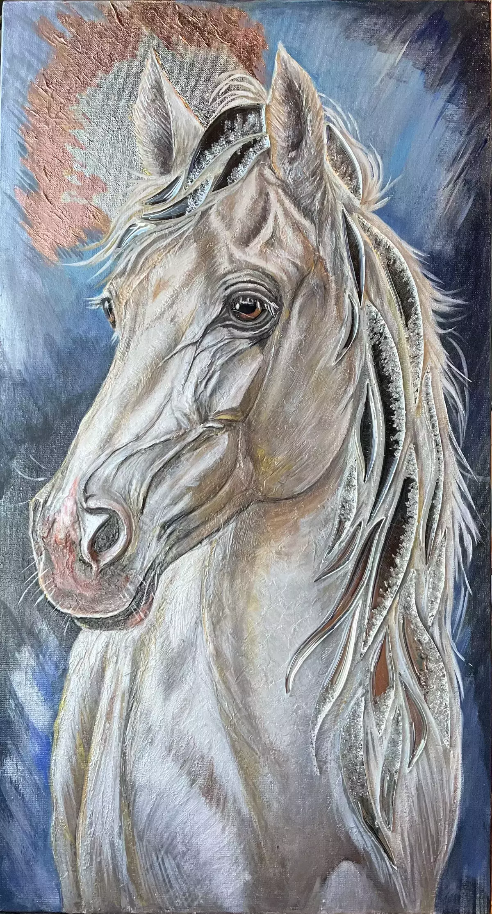

Дух свободы и поиска: Лошадь — вечный символ свободы, движения и верности.
42х70 см.
Арт-борд 42х70 см, акрил, текстурная паста, зеркальные элементы, хрустальная крошка, эпоксидная смола, зеркальная поталь, лак. Картина представляет собой интерьерную работу в стиле Mixed Media (смешанная техника), где классическая живопись соединяется с современными скульптурными материалами. С помощью структурной пасты и мастихина скульптурно проработаны анатомические особенности: рельефные надбровные дуги, мощные линии морды, скулы, изгиб шеи и чуткие уши.декоративный акцент сделан на прядях гривы из зеркальных элементов,залитых эпоксидной смолой, этот прием дает потрясающий оптический эффект: при изменении угла обзора и освещения грива начинает буквально вспыхивать и искриться, имитируя блеск звезд. Вся цветовая гамма картины пронизана холодным, мистическим сиянием. Серебристо-белая шерсть коня, глубокий сине-стальной фон и мерцающие элементы вызывают прямую ассоциацию с холодным лунным светом, заливающим ночной пейзаж.
Дух свободы и поиска: Лошадь — вечный символ свободы, движения и верности. Внимательный, глубокий взгляд коня устремлен вдаль, словно он замер на мгновение во время своего бесконечного путешествия под покровом ночи. Сверкающая грива выглядит как звездный шлейф, который оставляет за собой этот благородный странник. Картина исследует тему одиночества, внутреннего поиска и неразрывной связи живого существа с ритмами Вселенной.